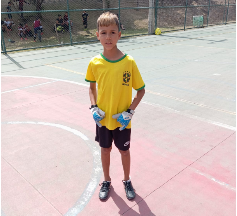

Embora o jogo tenha sido bastante disputado e equilibrado no primeiro tempo, o Fla Crias FC confirmou sua superioridade no campeonato, vencendo os Crias FC com 3 gols de Arthur Pierre e 3 gols de Nathan Felipe. No lado dos Crias FC, Arthur Fernando marcou um gol e o recém contratado Gabriel marcou duas vezes. Apesar de ter sido um dos destaques do jogo, Arthur Pierre marcou um gol contra, aumentando o placar para o adversário. O grande destaque da partida foi goleiro Thomas, que evitou vários gols impedindo que o Fla Crias tivesse um placar ainda mais elástico.

Foto: Leonardo de Paula. Thomas foi o grande destaque do jogo com ótimas defesas.